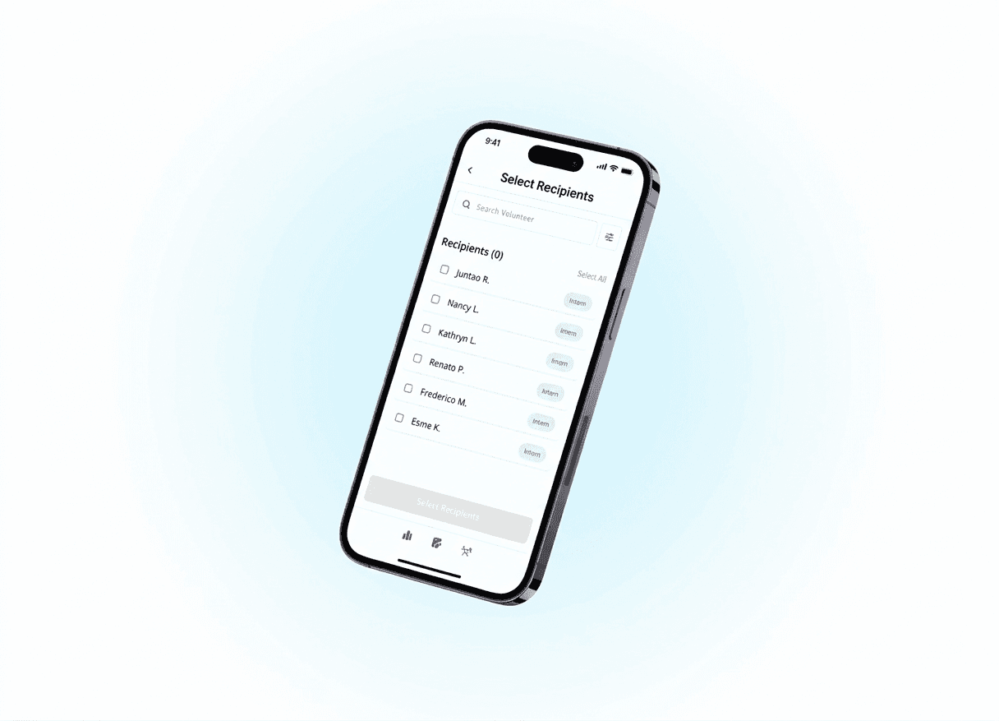
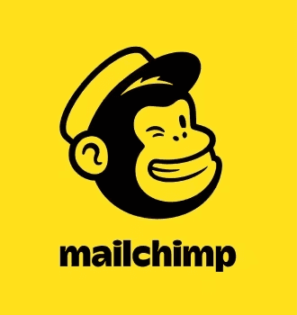
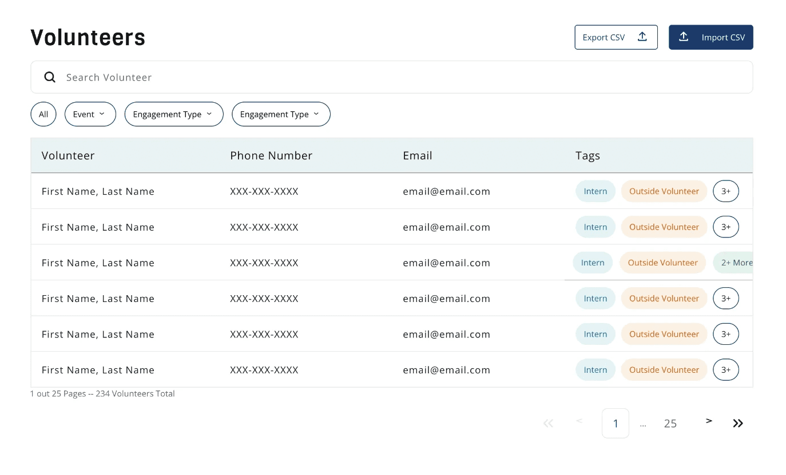
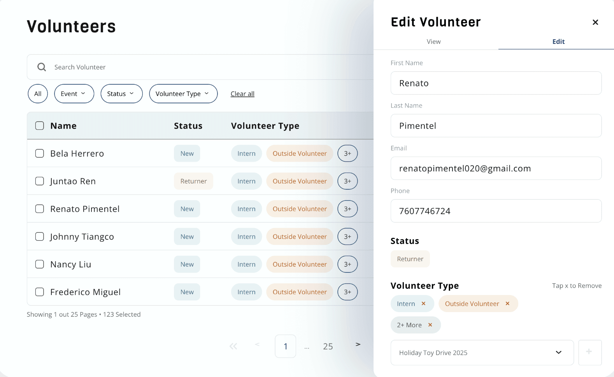

Home Start: Volunteer Management
Shipping a centralized management system with automated communication.

The Problem
Manasi, Home Start's manager, worked 20 hours per week, but that number spiked to 30–50 hours before major events.
75% of her time was spent on sending messages.
Manasi managed volunteers across disconnected tools: tracking records in Excel, drafting messages in Notes, and manually texting each person individually due to privacy constraints. Manual personalization created significant time overhead and human error risk.
The Solution
How might we help Home Start centralize volunteer data and deliver personalized, privacy-safe communication at scale?
1. Privacy-Safe Messaging
The system allows the coordinator to write one message and send it to a selected group, delivering it as individual texts to each volunteer so phone numbers remain private while maintaining a personal feel.
Select & Filter Volunteers
A search and tag-based filtering allows for segmenting volunteers by event, role, or program.

Personalize at Scale
Templates include dynamic fields that automatically customize each message for every recipient.
2. Centralized Volunteer Database
All volunteer information (contact details, roles, tags, and history) lives in one searchable system, enabling easy imports, filtering, and profile updates without external spreadsheets.
CSV Migration
Import & export existing spreadsheets and updated records, streamlining data transition and reporting.
Tag System & User Profiles
View, manage, and filter tags dynamically to keep volunteer segments precise and actionable.
Research & Process
Key Insights
Our discovery process incorporated client-led workflow walkthroughs, cross-channel artifact audits, biweekly client check-ins, and constraint mapping across privacy, operational, and technical realities. Our findings included:
Manual segmentation was a key barrier.
Privacy constraints hindered bulk messaging.
Personalization directly drove engagement.
Competitive Positioning

Market Landscape:
- Volunteer self-service portals
- Feature-heavy CRM workflows
- Multi-admin organizations
Home Start Needs:
- Single operator
- High personalization
- Spreadsheet interoperability
Constraints & Tradeoffs
- Full CRM vs spreadsheet-native model → chose lightweight model to reduce admin friction
- SMS compliance vs personalization depth → automated dynamic templates while respecting privacy
- Manual segmentation vs automation → automated filtering to streamline data access
Design Principles
- Automation of workflow
- Privacy and personalization by default
- Zero technical overhead
Core System Model
- Structured volunteer tagging model
- Broadcast-based SMS engine
- Lightweight data schema
Feedback & Iterations
Following usability testing, I synthesized feedback into two themes: visual clarity and workflow friction. I prioritized high-impact improvements to hierarchy, consistency, and bulk actions to reduce operational complexity. Here's a glimpse:
Need a way to select/deselect all

Needs way for Manasi to edit all the user information at once, instead of one by one on the cell.
Revise hierarchy of category order; volunteer role may be more important to recognize.

Key Takeaways!
This project reinforced that strong product design starts with understanding how people actually work. By embedding in Manasi's daily workflow, we uncovered the real bottlenecks and redesigned the system around them, reducing manual effort by ~75% while preserving personal outreach. We used constraints to shape our solution rather than limit it!
Delivery & What's Next
Upon completing the design phase, all visual and interaction components of our product MVP were finalized and handed off to the development team. The current roadmap targets full deployment of the mobile-friendly dashboard by Q2 2026, with advanced features such as analytics, templates, and scheduled messaging to follow in subsequent V2 releases.